The Good Industries Universal Pod ("GI Pod", "UniPod" or "UP") is a modular spacecraft supposed to cover all imperialistic needs like logistics, resource extraction, construction, structure maintenance and heavy assault.
The project was 30 megaticks late and totally out of other budgets. Still, as claimed by military, industrial and political leaders, the UniPod is unparalleled to maintain peace and prosperity across the galaxies.
Instructions (includes part list)
Rendered images (maximal configuration)
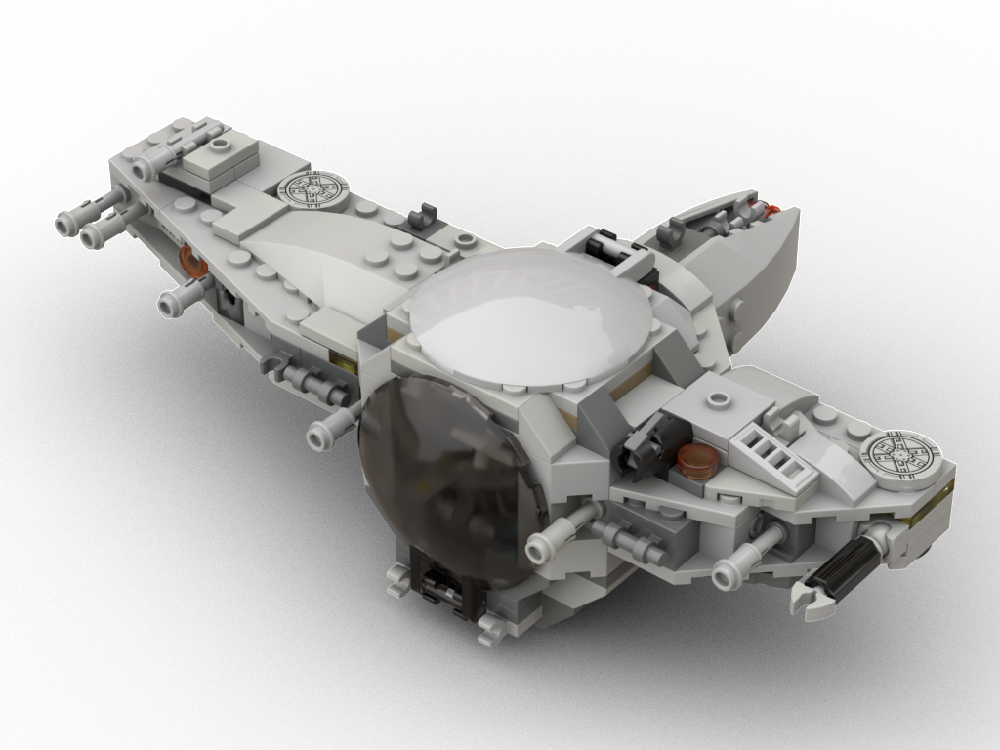
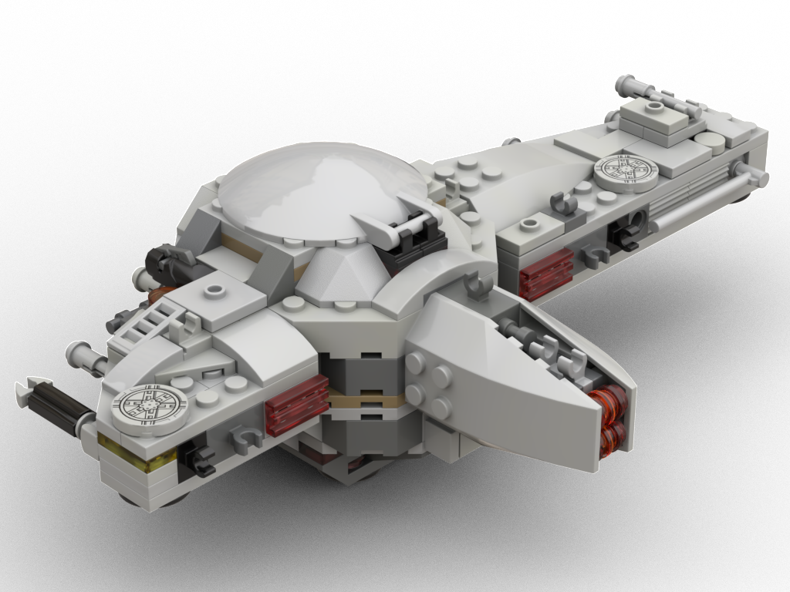
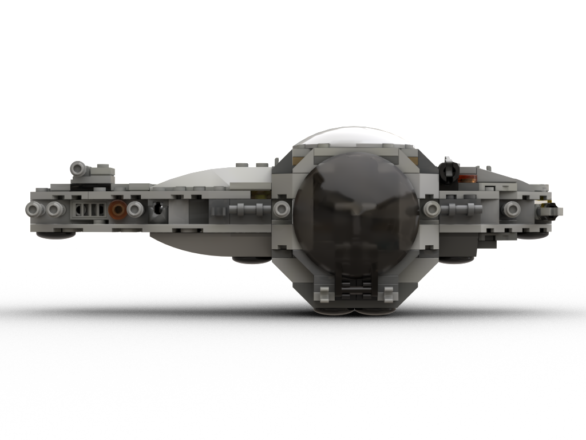
Features
- Spacious cockpit pod with lots of controls and options to store minifigure gear
- The pod has 2 blasters and various connection sockets
- Detachable/attachable wings and engine, allowing various configurations
- Heavy assault wing with 4 blasters, 1 torpedo launcher, 1 turret cannon, additional gear storage options and a extendable pole to support the model standing
- Tool wing with 1 blaster, 1 pellet launcher, droid or light container socket, more gear storage options and a mechanical arm
- Engine can
- Rear engine can be replaced with the engines of the Wedge and the Needle. Also supports the cargo pod of the Needle (see photos below)
The model started based on the "Lego Star Wars TIE Advanced Prototype" capsule design, which I needed to gut and adapt early on to keep the ball shape and introduce plenty of connection sockets.
I always liked the idea of a smallish ball pod with lots of connectors.
- The part base are various Lego Star Wars sets
- Time needed to digitalize: ~110 minutes
- Dimensions: 12x21x7cm, 215g, 244 parts, 119 distinct parts
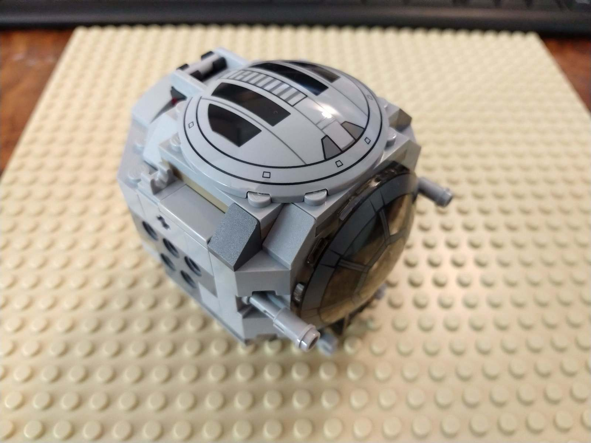
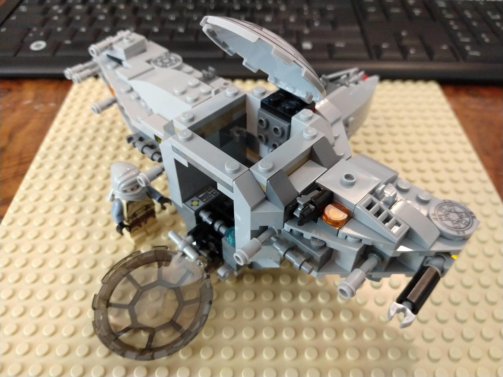
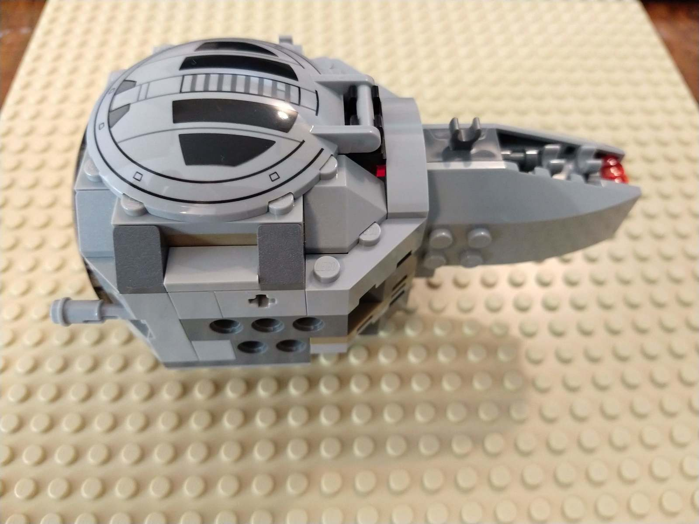
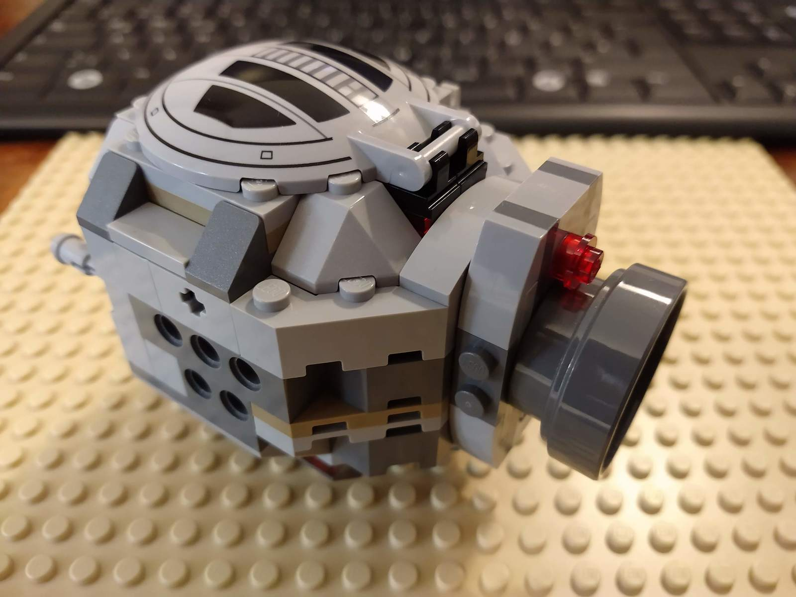
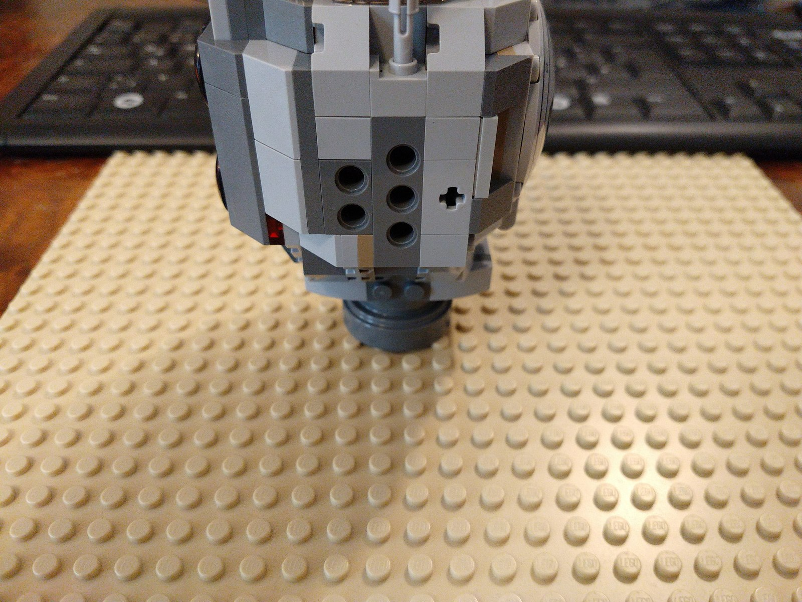
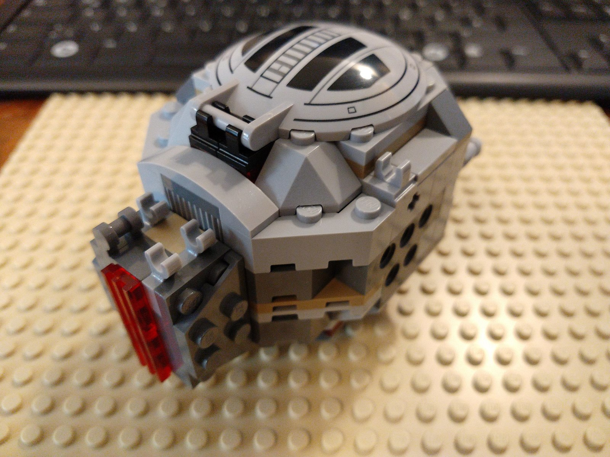
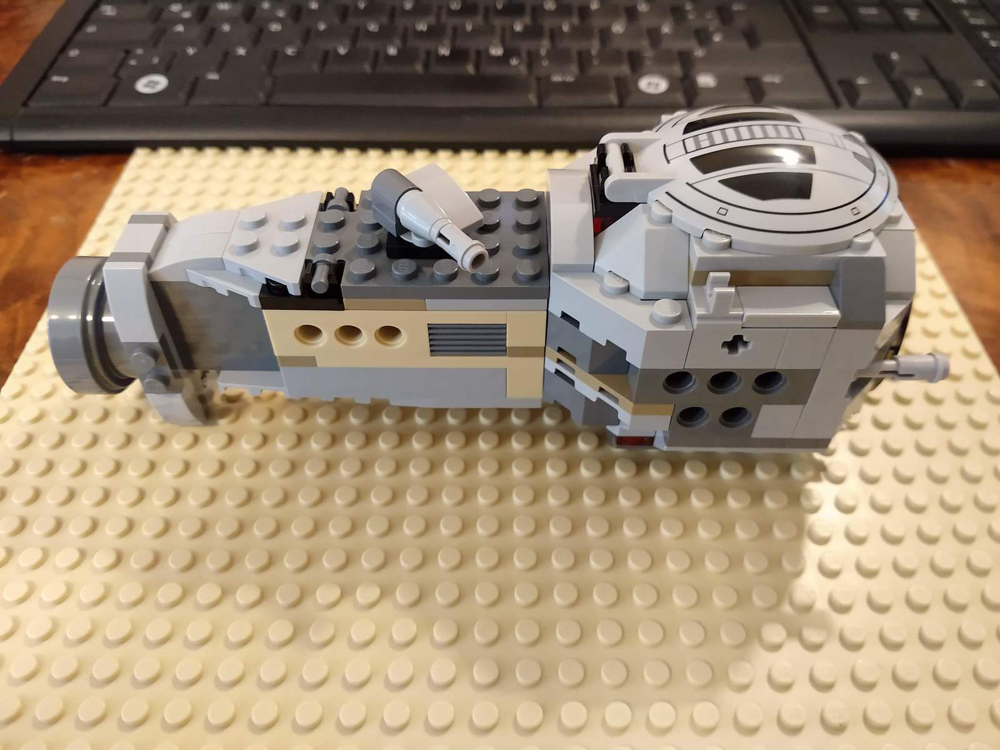
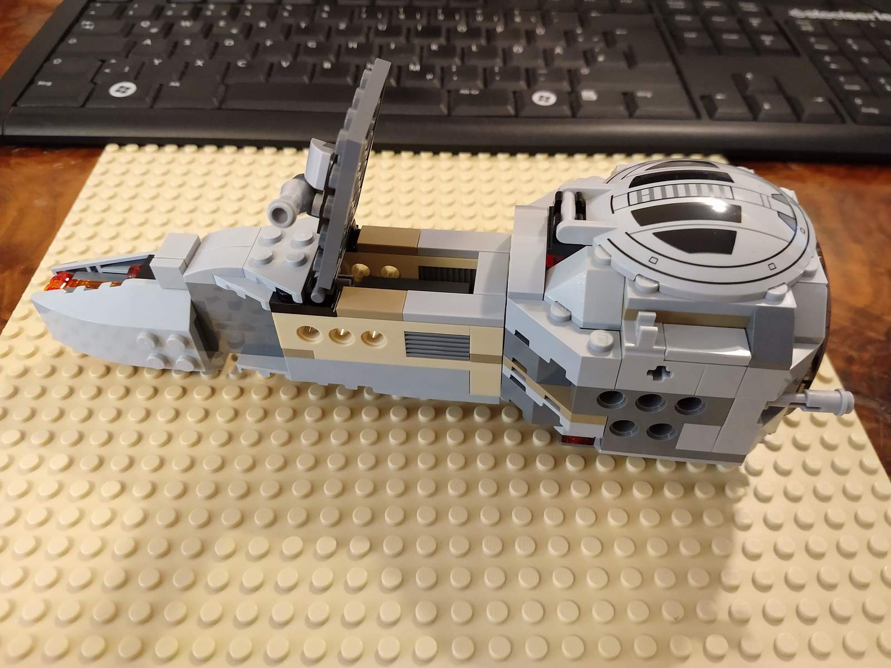